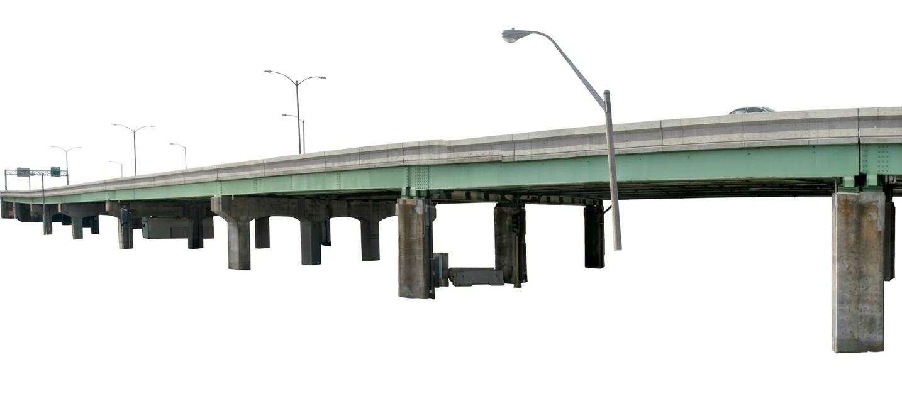

Somerville is a city of houses. Not the grand estates of the Back Bay or the sterile condominiums rising along the waterfront, but the modest, densely packed homes of working families—triple-deckers stacked like layer cakes, Victorians with peeling paint and proud cornices, colonials squeezed shoulder-to-shoulder on streets that were never meant for cars.
For over a century, these buildings have absorbed the lives of immigrants, laborers, artists, and students. They have been divided and subdivided, painted and repainted, neglected and lovingly restored. They are the physical record of a city in constant flux, and yet they endure—anchoring neighborhoods that might otherwise be unrecognizable from one decade to the next.
What follows is a small portrait of that inheritance: five houses, five addresses, five glimpses into the architectural character that makes Somerville unlike anywhere else in Greater Boston.
